Материалы для производства
Презентация
SILVER Ag+
Комплексное решение для производителя питьевой воды и напитков: стабильность продукта, снижение микробиологических рисков, внедрение и пилот на линии.
14 слайдов · PDF · 2,4 МБ
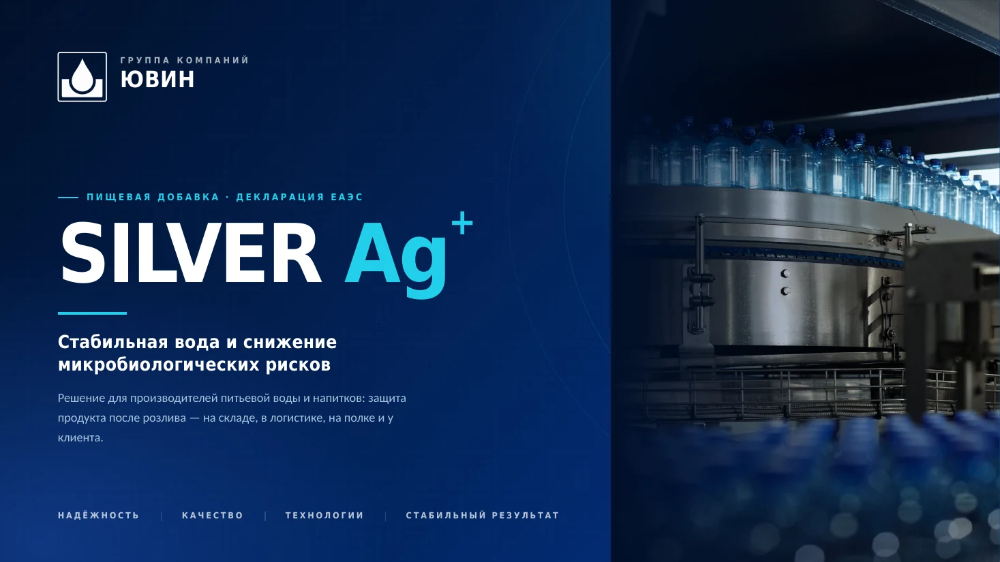
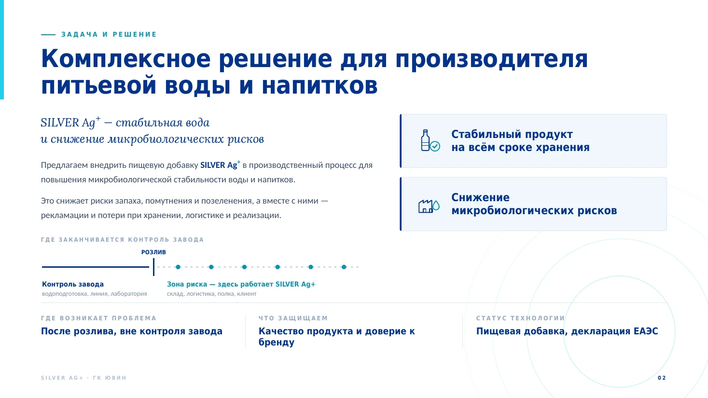
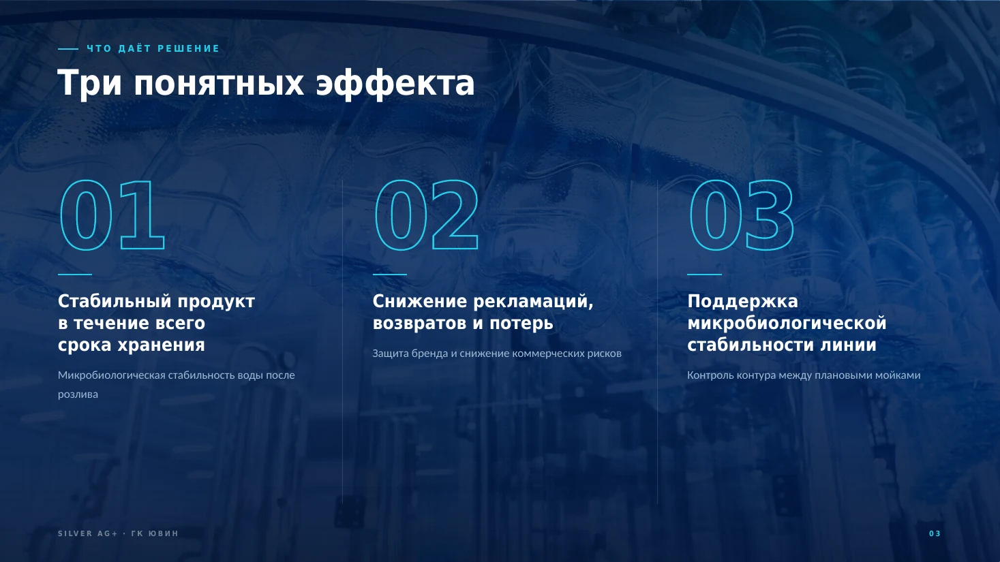
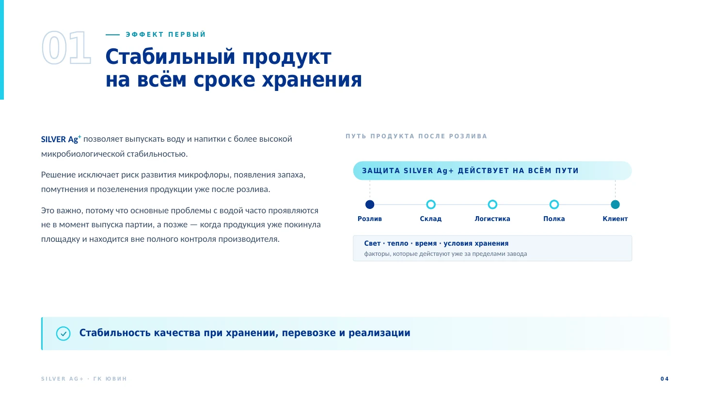
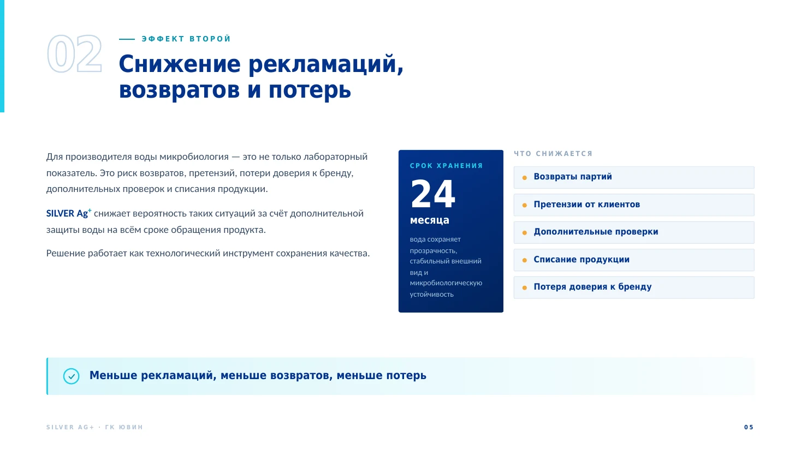
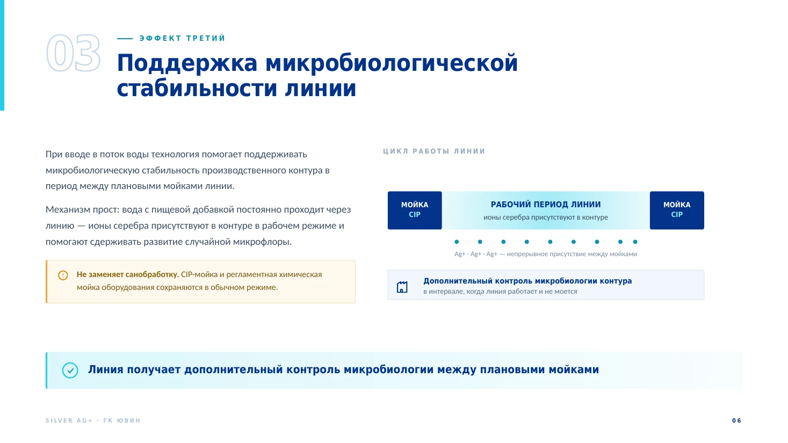
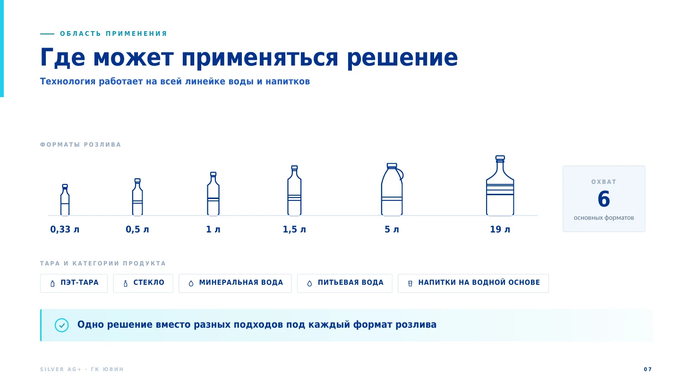
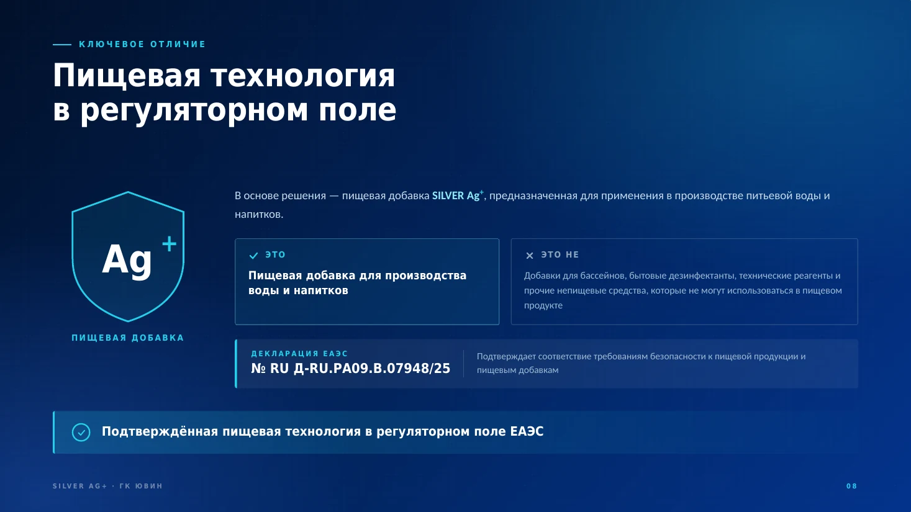
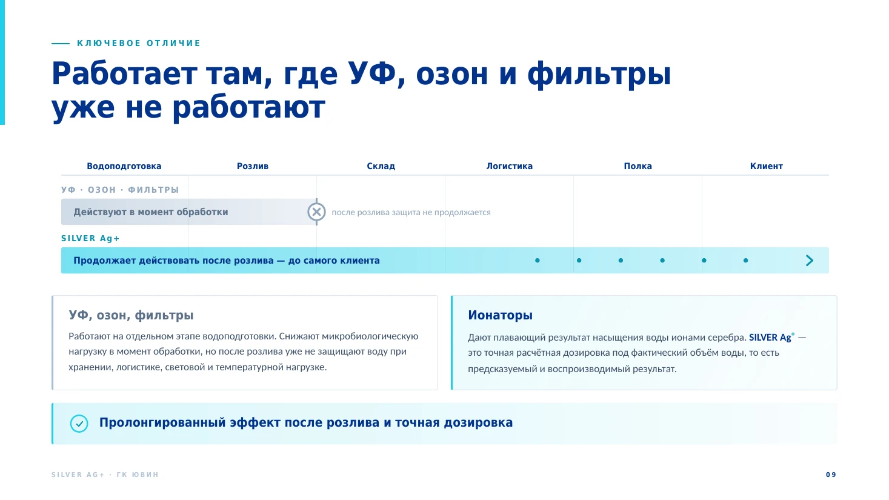
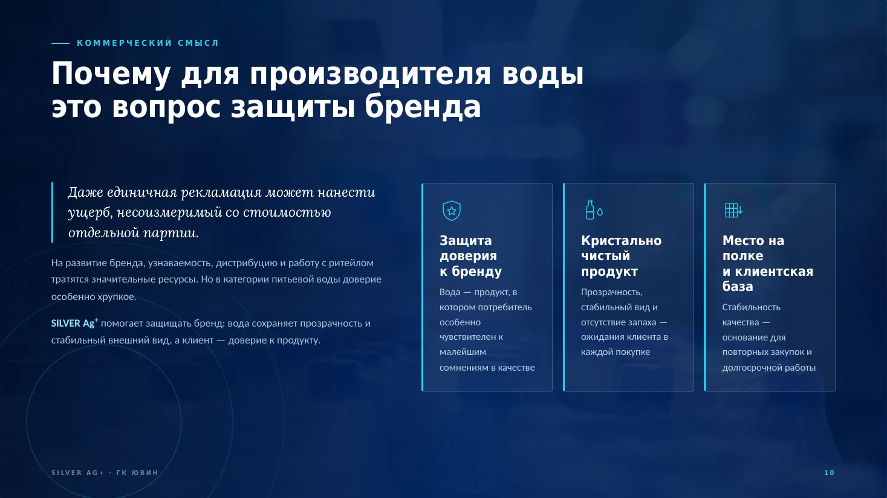
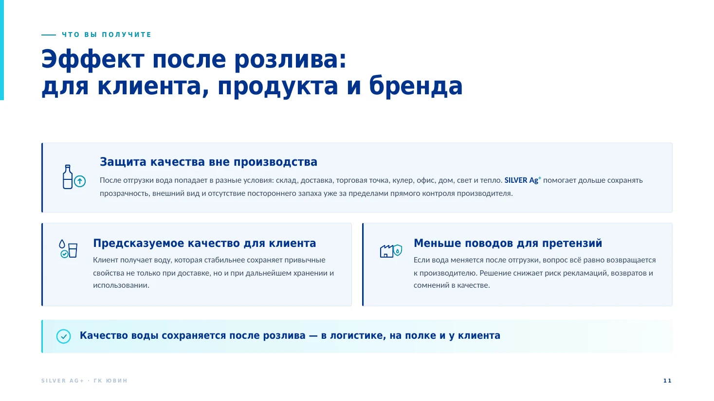
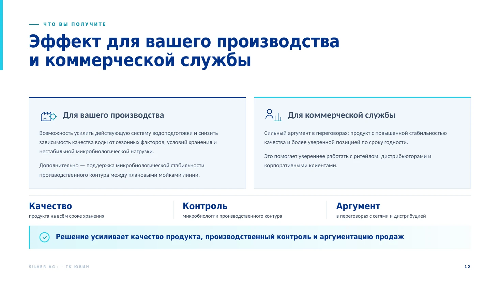
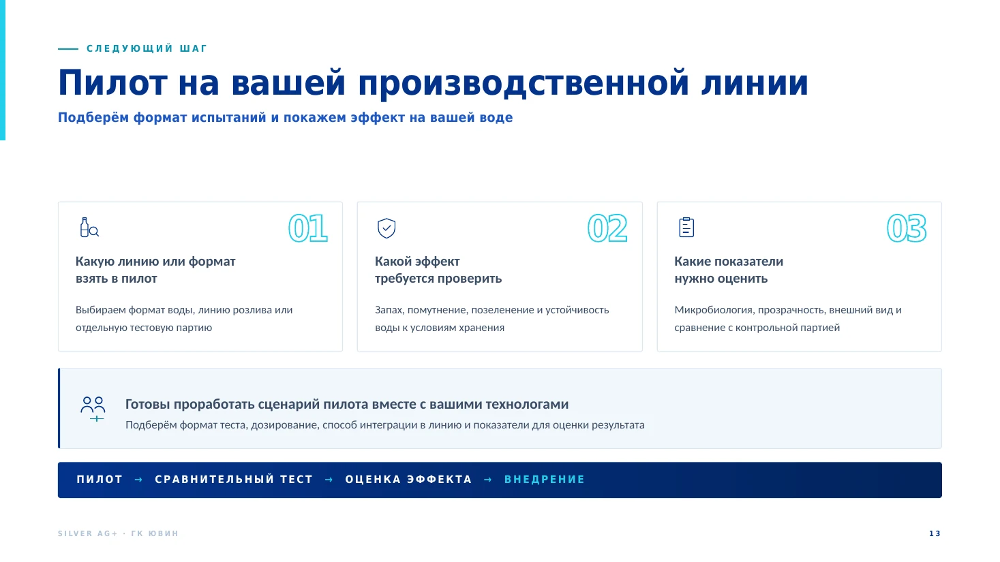
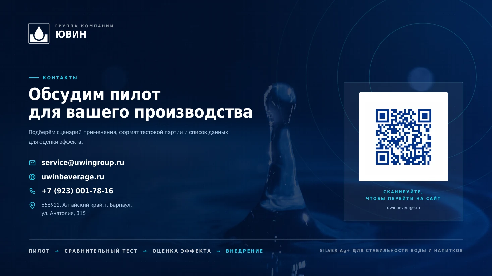
Презентация всегда доступна в PDF